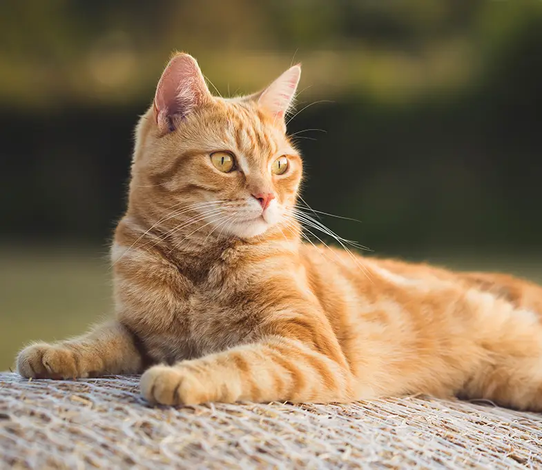

Adoção de Gatos

Sexta (20/05) | Lisboa
Há muitas vantagens em adotar um gato ou gatinho. Estará a dar uma segunda oportunidade a um gato de ter uma boa vida familiar, uma oportunidade que todos os animais merecem.